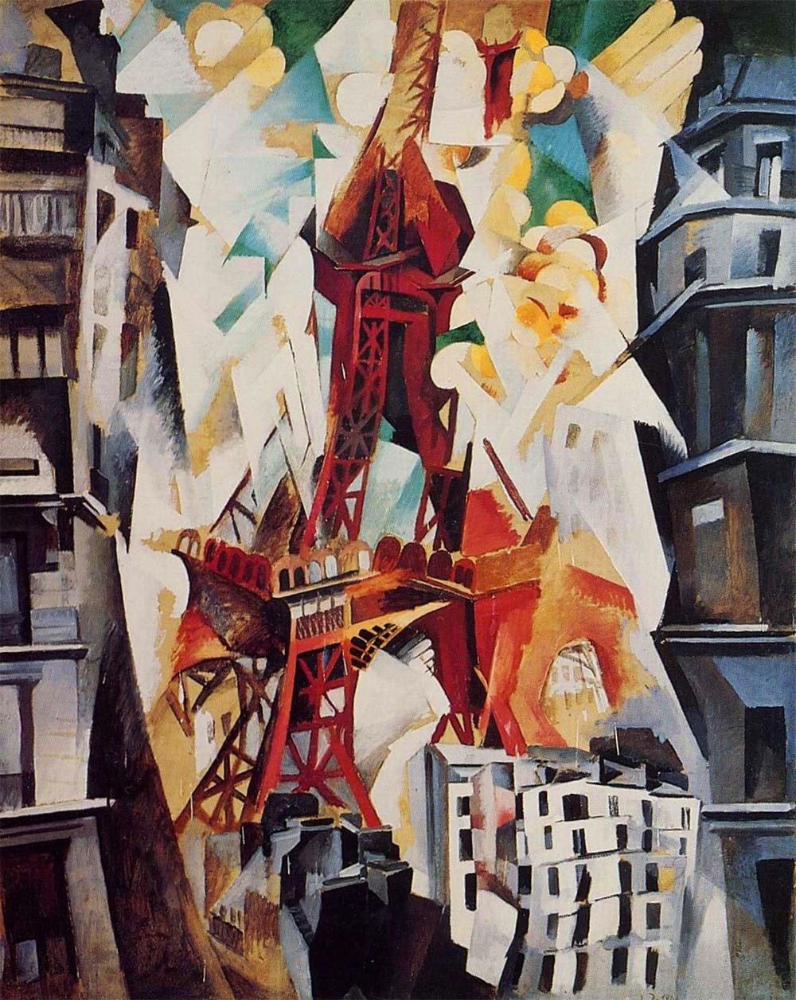

A city, set trembling.
Red rises. The street folds beneath it.

Object data, revision history and biography follow the cited sources. Composition, colour, light and emotional readings are independent visual analysis by Daily Art, not statements of the artist’s intentions.
Composition | Look up, then down
The tower resembles a red spine bent at several joints. Its diagonals change direction while carrying the eye upward; its tip runs beyond the picture. Dark buildings press inward from both edges, locating us in something like a narrow street.
Yet the white buildings at lower right offer a view down onto roofs. Looking up and looking down meet on one surface, denying the eye a settled position. Cover the outer buildings with your hands: much of the tower’s apparent scale comes from the pressure of that dark frame.
Colour | Why red comes forward
Brick red and ochre meet blue-green, slate and cream. Near-complementary red–green and orange-yellow–blue relationships pull tower and sky apart, without forming an exact or evenly balanced colour scheme. Muted greys at the edges give the concentrated central red room to feel hot and close.
Simultaneous contrast offers another way in: red beside a cool green can appear warmer; beside gold, it joins a warmer passage. Hue contrast works alongside abrupt changes from deep grey to pale cream. Neighbouring colours alter one another’s appearance, helping build space without a single stable perspective.
Light | Brightness becomes a shape
White wedges, pale yellow lobes and blue-green fragments thread around the tower. The sky seems to have a physical presence rather than forming an even backdrop. Dark buildings make the bright centre feel suddenly open; the eye adjusts between the two.
A single light source cannot readily explain this arrangement. Light and dark cross familiar object boundaries, while rounded clouds collide with the ironwork’s sharp angles. In my reading, light participates in taking the city apart.
Technique | Breaking a continuous view
Crossing strokes abbreviate the lattice. Hard-edged building planes meet softer cloud marks. Dense and open passages, straight lines and curves keep interrupting one another: the painted surface holds both a structural skeleton and a sense of moving air. These are visible effects, not evidence of particular pigments or numbers of paint layers.
The museum dates the work 1911/23. It was reworked after its 1912 exhibition and had reached its present appearance by a 1923 reproduction. [1] The date therefore spans making and revision; it does not establish twelve years of continuous work.
Artist | Colour learns to organise
Born in Paris, Delaunay (1885–1941) apprenticed in theatre scenery, studied colour theory and encountered Cubism. He began painting the tower in 1909, made Windows pictures in 1912 and circular works in 1913. [2]
That trajectory helps locate this painting: an identifiable building persists while coloured planes begin to follow their own rhythms. We can experience a tower and the movement of colour at once.
Why it moves us | Recognition without certainty
What catches me is recognising the landmark without quite getting hold of it. A tower usually offered as a stable city emblem feels unsteady and heated here. It recalls the bodily surprise of entering a large city for the first time and losing your bearings as you look up.
On the last day of September, follow the roofs at lower right into the red structure and then into the light above. Familiar buildings may still contain rhythms we have stopped noticing. This is a personal association, not an established symbolic programme.
Try it | Keep one line of continuity
Photograph upward and downward views from one street corner. In your own collage, retain a continuous vertical subject and tilt only the sides. Check the greyscale first: darker wings, a brighter centre. Then give the subject a concentrated warm accent, keeping other fragments quieter.
Practice palette: paper #E9E3CF at 50%, grey-green #526B63 at 30%, brick red #A53B2E at 20%. A little ochre can replace some paper colour. These are editorial approximations and suggested design proportions, not sampled pigments or measured areas of the painting.
Sources and image rights
- Museum API: object data and revision history
- Museum biography
- Image record and public-domain statement
- Downloaded original-size image


Any applicable copyright remains with the original creator or rights holders. The downloaded file is marked public domain (PD-Art); its record notes that conditions can vary by jurisdiction. The museum API returns is_public_domain: false, so no museum CC0 licence is claimed. The image used here is the linked public image archive file, 1000 × 1256 pixels. No colour alteration; full image in the article and cover, labelled detail on card three. Commentary is independent visual analysis by Daily Art.